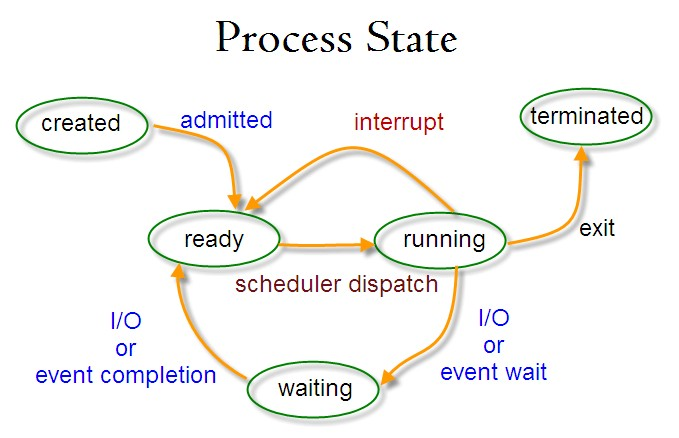
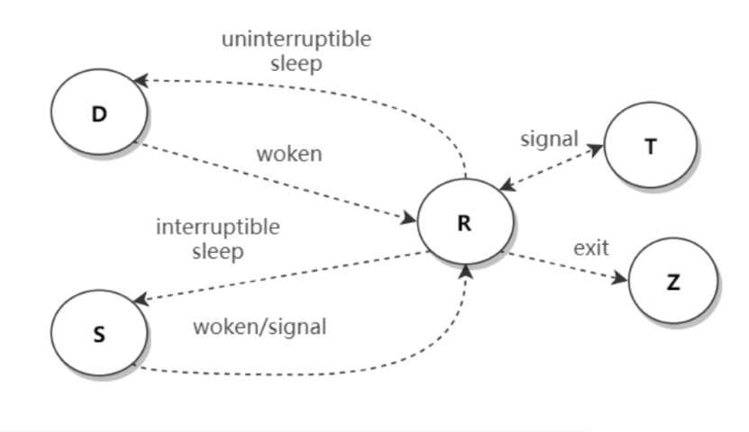

Linux工具
快捷操作
vi模式
1 | #.bashrc |
编辑命令
- Ctrl + A ：移到命令行首
- Ctrl + E ：移到命令行尾
- Ctrl + U ：从光标处删除至命令行首
- Ctrl + K ：从光标处删除至命令行尾
- Ctrl + W ：从光标处删除至字首
- Alt + D ：从光标处删除至字尾
控制命令
- Ctrl + L：清屏
- Ctrl + C：终止进程（SIGINT信号）
- Ctrl + D：终止输入（EOF）
- Ctrl + Z：挂起命令
- Ctrl + P、Ctrl + Q
Bang (!) 命令
- !! ：执行上一条命令
- !blah：执行最近的以 blah 开头的命令，如 !ls
进程相关
- nohup 脱离terminal仍可运行
&，后台运行，与ctrl-Z一样，结合fgbgjobs
开发及调试
调试工具比开发工具更考验一个人的工程能力。
查看依赖库：ldd
- 程序依赖库查询
1
2
3
4ldd后接可执行文件
程序依赖的库|系统提供的对应的库|库加载的开始地址
ldd a.out
- 程序依赖库查询
进程内存映射：pmap
- 显示进程内存映射
1
2
3
4
5
6
7
8
9
10
11-x显示扩展信息，后接进程pid
Address: 内存开始地址
显示信息：
Kbytes: 占用内存的字节数
RSS: 保留内存的字节数
Dirty: 脏页的字节数（包括共享和私有的）
Mode: 内存的权限：read、write、execute、shared、private
Mapping: 占用内存的文件、或[anon]（分配的内存）、或[stack]（堆栈）
Device: 设备名 (major:minor)
pmap -x 12345
- 显示进程内存映射
gdb
- 调试工具
- 自成体系
例如查看 coredump：1
2
3
4
5
6
7ulimit -c unlimited
gdb binary/path/of/corefile
bt(bt full)
p variable-name(print variable-name)
frame frame-number
q(quit)
strace
system call trace
查看系统调用
文件处理
一切皆文件
文件查找：find
按名查找：
查找具体文件（一般方式）
1
find . -name *.cpp
查找具体文件（正则方式）
1
2
3-regex为正则查找，-iregex为忽略大小写的正则查找
find -regex ".*.cpp$"定制查找：
按类型查找
1
2
3f(file)为文件，d(dictionary)为目录，l(link)为链接
find . -type f按时间查找
1
2
3
4atime为访问时间，x天内加参数"-atime -x"，超过x天加"-atime -x"
mtime为修改时间
find . -type f -atime -7按大小查找
1
2
3-size后接文件大小，单位可以为k(kb)，m(MB)，g(GB)
find . -type f -size -1k按权限查询
1
2
3-perm后接权限
find . -type -perm 644
文本搜索：grep
模式匹配
1
2
3匹配test.cpp文件中含有"iostream"串的内容
grep "iostream" test.cpp多个模式匹配
1
2
3匹配test.cpp文件中含有"iostream"和"using"串的内容
grep -e "using" -e "iostream" test.cpp输出信息
1
2
3-n为打印匹配的行号；-i搜索时忽略大小写；-c统计包含文本次数
grep -n "iostream" test.cpp
排序：sort
- 文件内容行排序
1
2
3
4
5
6排序在内存进行，不改变文件
-n(number)表示按数字排序，-d(dictionary)表示按字典序
-k N表示按各行第N列进行排序
-r(reverse)为逆序排序
sort -n -k 1 test
- 文件内容行排序
统计行和字符：wc
- 基本统计
1
2
3-l统计行数(line)，-w统计单词数(word)，-c统计字符数(character)
wc -l test
- 基本统计
文本替换：sed
- 可以直接改变被编辑文件内容的
- 自成体系
数据流处理：awk
- 可以直接改变被编辑文件内容的
- 自成体系
性能分析
进程查询：ps
查看正在运行进程
1
2常结合grep筛选信息(e.g, ps -ef | grep xxx)
ps -ef以完整格式显示所有进程
1
2常结合grep筛选信息
ps -ajx补充： Linux进程有几种状态
状态 说明 R running or runnable (on run queue)正在执行或者可执行，此时进程位于执行队列中。 D uninterruptible sleep (usually I/O)不可中断阻塞，通常为 IO 阻塞。 S interruptible sleep (waiting for an event to complete) 可阻塞中断，此时进程正在等待某个事件完成。 Z zombie (terminated but not reaped by its parent) 僵死，进程已经终止但是尚未被其父进程获取信息。 T stopped (either by a job control signal or because it is being traced) 结束，进程既可以被作业控制信号结束，也可能是正在被追踪。 

进程监控：top
- 显示实时进程信息
1
2
3
4
5
6不带参数，具体信息通过grep筛选
交互模式下键入M进程列表按内存使用大小降序排列，键入P进程列表按CPU使用大小降序排列
%id表示CPU空闲率，过低表示可能存在CPU存在瓶颈
%wa表示等待I/O的CPU时间百分比，过高则I/O存在瓶颈 > 用iostat进一步分析
top
- 显示实时进程信息
打开文件查询：lsof
查看占用某端口的进程
1
lsof -i:3306
查看某用户打开的文件
1
lsof -u inx
查看指定进程打开的文件
1
lsof -p 12345
查看指定目录下被进程打开的文件
1
2
3这里是"+d"，需要注意，使用"+D"递归目录
lsof +d /test
内存使用量：free
- 内存使用量
1
2
3可获得内存及交换区的总量，已使用量，空闲量等信息
free
- 内存使用量
监控性能指标：sar
监控CPU
监控CPU负载
1
2
3
4加上-q可以查看运行队列中进程数，系统上进程大小，平均负载等
这里"1"表示采样时间间隔是1秒，这里"2"表示采样次数为2
sar -q 1 2监控CPU使用率
1
2
3
4可以显示CPU使用情况
参数意义同上
sar -u 1 2监控内存
查询内存
1
2
3
4可以显示内存使用情况
参数意义同上
sar -r 1 2页面交换查询
1
2
3
4可以查看是否发生大量页面交换，吞吐率大幅下降时可用
参数意义同上
sar -W 1 2
cpu信息
- lscpu 查看cpu配置
- cat /proc/cpuinfo查看每个 CPU 核的信息
网络工具
网卡配置（链路层）：ifconfig
显示设备信息
1
2
3可以显示已激活的网络设备信息
ifconfig启动关闭指定网卡
1
2
3
4前一个参数为具体网卡，后一个为开关信息
up为打开，down为关闭
ifconfig eth0 up配置IP地址
1
2
3前一个参数为具体网卡，后一个为配置的IP地址
ifconfig eth0 192.168.1.1设置最大传输单元
1
2
3
4前一个参数为具体网卡，后面为MTU的大小
设置链路层MTU值，通常为1500
ifconfig eth0 mtu 1500启用和关闭ARP协议
1
2
3# 开启arp如下，若关闭则-arp
ifconfig eth0 arp
查看当前网络连接（链路层/网络层/传输层）：netstat
网络接口信息
1
2
3显示网卡信息，可结合ifconfig
netstat -i列出端口
1
2
3
4-a(all)表示所有端口，-t(tcp)表示所有使用中的TCP端口
-l(listening)表示正在监听的端口
netstat -at显示端口统计信息
1
2
3
4-s(status)显示各协议信息
-加上-t(tcp)显示tcp协议信息，加上-u(udp)显示udp协议信息
netstat -s显示使用某协议的应用名
1
2
3-p(progress)表示程序，可以显示使用tcp/udp协议的应用的名称
netstat -pt查找指定进程、端口
1
2
3
4
5互逆操作第一个显示某程序使用的端口号，第二个显示某端口号的使用进程
第二个操作可以用lsof替代
netstat -ap | grep ssh
netstat -an | grep ':80'
查看路由表（网络层IP协议）：route
- 查看路由信息
1
2
3
4得到路由表信息，具体分析路由表工作需要网络知识
可以通过netstat -r(route)得到同样的路由表
route
- 查看路由信息
检查网络连通性（网络层ICMP协议）：ping
- 检查是否连通
1
2
3
4主要功能是检测网络连通性
可以额外得到网站的ip地址和连接最大/最小/平均耗时。
ping baidu.com
- 检查是否连通
转发路径（网络层ICMP协议）：traceroute
- 文件包途径的IP
1
2
3
4
可以打印从沿途经过的路由器IP地址
traceroute baidu.com
- 文件包途径的IP
网络Debug分析（网络层/传输层）：nc
端口扫描
1
2
3
4
5
6
7黑客很喜欢
扫描某服务器端口使用情况
-v(view)显示指令执行过程，-w(wait)设置超时时长
-z使用输入输出模式（只在端口扫描时使用）
数字为扫描的端口范围
nc -v -w 1 baidu.com -z 75-1000
命令行抓包（网络层/传输层）：tcpdump
- 可以跟踪整个传输过程。
- 自成体系
- 详见
域名解析工具（应用层DNS协议）：dig
1
2
3
4
5应用层，DNS
打印域名解析结果
打印域名解析过程中涉及的各级DNS服务器地址
dig baidu.com网络请求（应用层）：curl
- 自成体系
- 详见
其他
这里都是日常开发中高频命令。
终止进程：kill
1
2
3
4
5
6
7
8
9
10
11
12进程是否存在
kill -0
加具体进程PID，默认行为
发送SIGTERM(15)信号，等效kill -15
kill 12345
杀死某进程相关进程，进程无法善后，比较危险
发送SIGKILL(9)信号
kill -9 12345
脚本一般使用kill -0判断存在，之后kill -15，几秒钟后干不掉再用kill -9修改文件权限：chmod
- 更改文件权限
1
2
3
4
5
6
7可以对三种使用者设置权限，u(user, owner)，g(group)，o(other)
文件可以有三种权限，r(read)，w(write)，x(execute)
这里u+r表示文件所有者在原有基础上增加文件读取权限
这里777分别对应，u=111b，g=111b，o=111b
chmod u+r file
chmod 777 file
- 更改文件权限
创建链接：ln
创建硬链接
1
2
3文件inode中链接数会增加，只有链接数减为0时文件才真正被删除
ln file1 file2创建软（符号链接）链接
1
2
3
4
5-s(symbol)为符号链接，仅仅是引用路径
相比于硬链接最大特点是可以跨文件系统
类似于Windows创建快捷方式，实际文件删除则链接失效
ln -s file1 file2
显示文件尾：tail
- 查看文件尾部
1
2
3
4-f参数可以不立即回传结束信号，当文件有新写入数据时会及时更新
查看日志时常用
tail -f test
- 查看文件尾部
pstree
进程树
本博客所有文章除特别声明外，均采用 CC BY-NC-SA 4.0 许可协议。转载请注明来自 kid的部落格！
 微信
微信 支付宝
支付宝